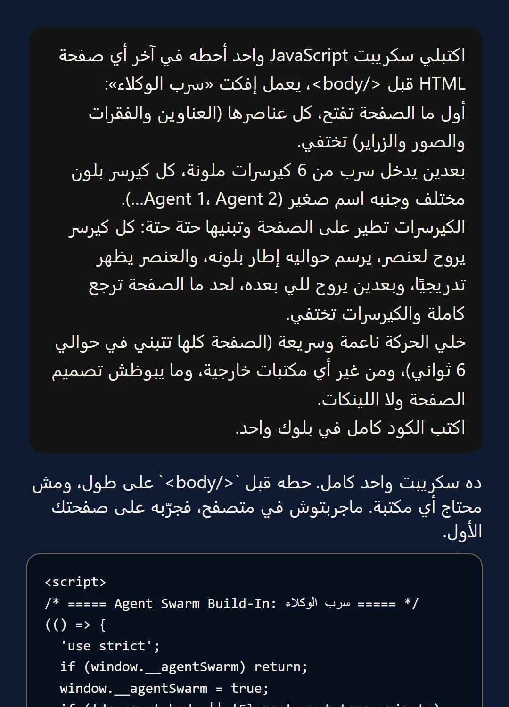
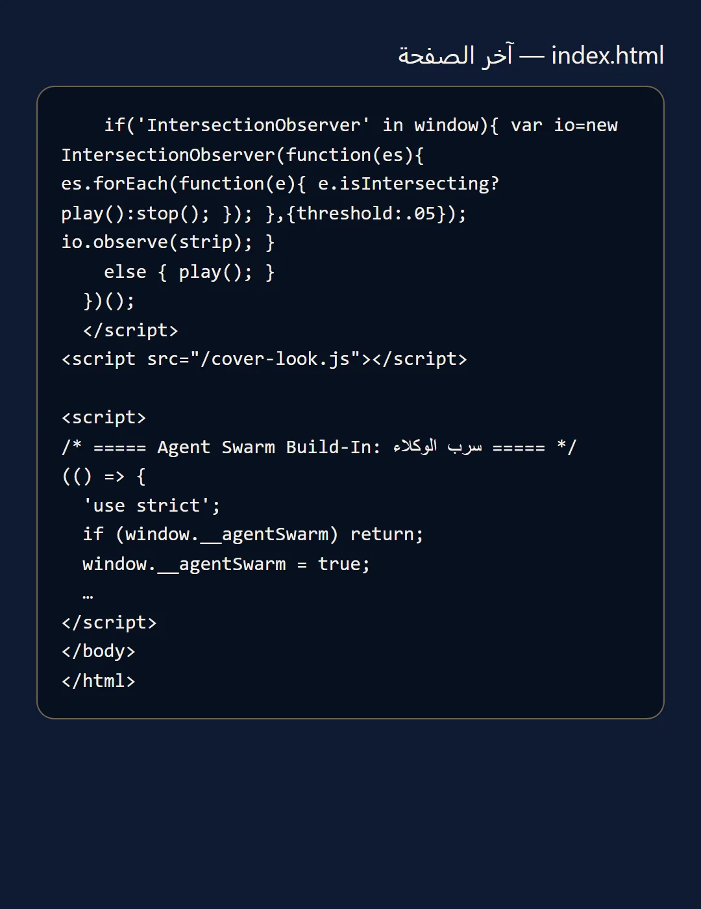
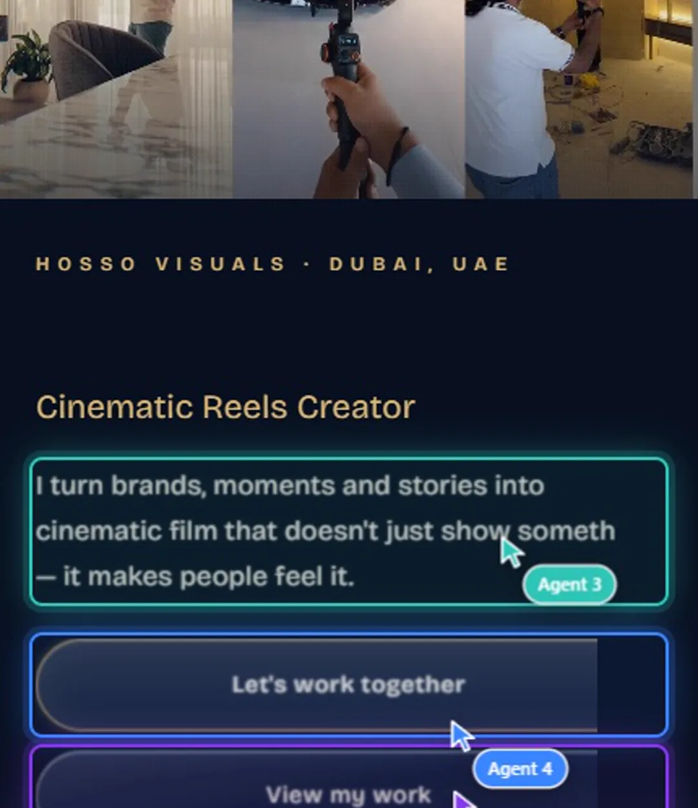
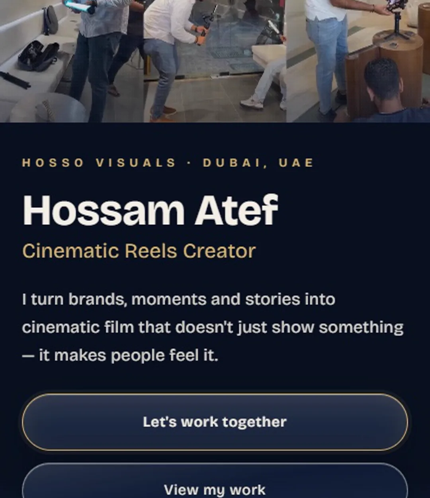

موقعك يتبنــيقدامك بسرب كيرســـرات
إفكت «سرب الوكلاء» اللي الكل بينزله: صفحتك تختفي، وستة كيرسرات ملونة بأسامي Agent تطير عليها وتبنيها حتة حتة. مش محتاج مبرمج ولا كورس: رسالة واحدة لـ Claude بتكتبلك السكريبت كله، وتحطه في آخر صفحتك. جربته بنفسي على موقعي يوم 11 نوفمبر 2026، والصور تحت من التجربة دي.


- 01
ابعت الرسالة دي لـ Claude
افتح Claude (على الموقع أو التطبيق) وانسخ الرسالة دي زي ما هي. Claude هيرد بسكريبت JavaScript واحد كامل، من غير أي مكتبة خارجية. الرد ممكن يختلف شوية من مرة للتانية، بس الفكرة واحدة.
اكتبلي سكريبت JavaScript واحد أحطه في آخر أي صفحة HTML قبل </body>، يعمل إفكت «سرب الوكلاء»: أول ما الصفحة تفتح، كل عناصرها (العناوين والفقرات والصور والزراير) تختفي. بعدين يدخل سرب من 6 كيرسرات ملونة، كل كيرسر بلون مختلف وجنبه اسم صغير (Agent 1، Agent 2…). الكيرسرات تطير على الصفحة وتبنيها حتة حتة: كل كيرسر يروح لعنصر، يرسم حواليه إطار بلونه، والعنصر يظهر تدريجيًا، وبعدين يروح للي بعده، لحد ما الصفحة ترجع كاملة والكيرسرات تختفي. خلي الحركة ناعمة وسريعة (الصفحة كلها تتبني في حوالي 6 ثواني)، ومن غير أي مكتبات خارجية، وما يبوظش تصميم الصفحة ولا اللينكات. اكتب الكود كامل في بلوك واحد.
الرسالة اللي بعتها، وأول رد Claude بالسكريبت (من التجربة الحقيقية) - 02
حطه قبل </body>
افتح ملف صفحتك (index.html أو أي صفحة)، والزق السكريبت كله في الآخر خالص قبل سطر </body>. لو موقعك على منصة زي Wix أو Shopify أو WordPress، حطه في خانة Custom Code / Footer code. المهم إن المنصة تسمح تضيف كود.

آخر صفحة موقعي بعد ما حطيت السكريبت قبل </body> - 03
افتح الصفحة واتفرج
أول ما الصفحة تفتح، العناصر بتختفي، والكيرسرات الملونة تطير على العناوين والفقرات والزراير، كل واحد يرسم إطار بلونه والعنصر يرجع يظهر وراه.

موقعي وهو بيتبني: كل كيرسر بيرسم إطار بلونه حوالين الحتة اللي بيبنيها - 04
الصفحة ترجع كاملة
في خلال ثواني الصفحة بترجع زي ما هي، واللينكات والزراير شغالين عادي حتى وهي بتتبني. ولو حد مشغّل «تقليل الحركة» على جهازه، الإفكت مش بيشتغل عنده خالص، ودي حاجة كويسة.

نفس الصفحة بعد ما السرب خلص، والتصميم زي ما هو - 05
غيّر الألوان والأسامي
في أول السكريبت هتلاقي جزء اسمه CONFIG: منه تغيّر ألوان الكيرسرات وأساميهم (حط اسم براندك بدل Agent) والمدة. أو اطلب من Claude: «خلي الكيرسرات بألوان البراند بتاعي».
خلي الكيرسرات بألوان البراند بتاعي، وغيّر أساميهم لـ
نصايح صغيرة
- Claude نفسه قالها في رده: ممكن المحتوى يبان لحظة صغيرة قبل ما يختفي، لأن السكريبت في آخر الصفحة. ده طبيعي.
- جرّب على نسخة من صفحتك الأول قبل ما ترفعها على الموقع الحقيقي.
- الإفكت ده بيتشاف أحسن في أول صفحة الموقع (الهيرو)، مش في صفحة طويلة كلها كلام.
عايز حد يعملهولك؟
عندك براند ومحتاج موقع زي اللي بنعمله هنا؟ أنا أعملهولك من الأول للآخر.